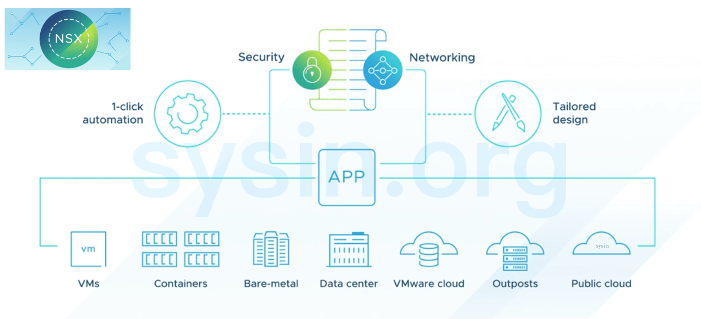

请访问原文链接：VMware NSX 4.2.4 - 网络安全虚拟化平台 查看最新版。原创作品，转载请保留出处。
作者主页：sysin.org
VMware NSX 4.2.4 | 27 MAY 2026 | Build 25410638
VMware NSX 4.2.3.3 | 27 JAN 2026 | Build 25171318
VMware NSX 4.2.3.2 | 15 DEC 2025 | Build 25077145
VMware NSX 4.2.3.1 | 29 SEP 2025 | Build 24954727
VMware NSX 4.2.3 | 31 JUL 2025 | Build 24866349
VMware NSX 4.2.2.2 | 29 SEP 2025 | Build 24942192
VMware NSX 4.2.2.1 | 04 JUN 2025 | Build 24765084
VMware NSX 4.2.2 | 08 MAY 2025 | Build 24730888
VMware NSX 4.2.1.4 | 04 JUN 2025 | Build 24765227
VMware NSX 4.2.1.3 | 10 FEB 2025 | Build 24533884
VMware NSX 4.2.1.2 | 10 Jan 2025 | Build 24476729
VMware NSX 4.2.1.1 | 05 DEC 2024 | Build 24405893
VMware NSX 4.2.1 | 10 OCT 2024 | Build 24304122
VMware NSX 4.2.0.2 | 17 SEP 2024 | Build 24278654
VMware NSX 4.2.0.1 | 20 August 2024 | Build 24210154
VMware NSX 4.2.0 | 23 July 2024 | Build 24105817
VMware NSX 4.1.2.7 | 29 SEP 2025 | Build 24960655
VMware NSX 4.1.2.6 | 04 JUN 2025 | Build 24723849
VMware NSX 4.1.2.5 | 30 July 2024 | Build 24150840
VMware NSX 4.1.2.4 | 14 MAY 2024 | Build 23786733
VMware NSX 4.1.2.3 | 12 MAR 2024 | Build 23382408
VMware NSX 4.1.2.1 | 07 NOV 2023 | Build 22667789
VMware NSX 4.1.2 | 17 October 2023 | Build 22589037
VMware NSX 4.1.1 | 15 August 2023 | Build 22224312
VMware NSX 4.1.0.2 | 1 June 2023 | Build 21761691
VMware NSX 4.1.0 | 28 FEB 2023 | Build 21332672
VMware NSX 4.0.1.1 | 13 OCT 2022 | Build 20598726
VMware NSX 4.0 | 02 AUG 2022 | Build 20159689
网络虚拟化平台
VMware NSX
使用 VMware NSX，通过单一窗口像管理单个实体一样管理整个网络。

VMware NSX 提供了一个敏捷式软件定义基础架构，用来构建云原生应用程序环境。NSX 专注于为具有异构端点环境和技术堆栈的新兴应用程序框架和架构提供网络、安全和自动化并简化操作。NSX 支持云原生应用程序、裸机工作负载、公有云和多个云。
NSX 旨在由开发组织管理、操作和使用。NSX 允许 IT 团队和开发团队选择最适合其应用程序的技术。
产品名称更改
NSX 4.0.0.1 是一个主要版本，在 NSX 的所有垂直领域提供新功能：网络、安全和服务。一些主要的改进如下：
- IPv6 面向外部的管理平面引入了对来自外部系统与 NSX 管理集群（仅限本地管理器）的 IPv6 通信的支持。
- Block Malicious IPs in Distributed Firewall 是一项新功能，可以阻止进出恶意 IP 的流量 (sysin)。
除了功能之外，产品的每个区域都添加了许多其他功能。更多详细信息可在下面添加功能的详细说明中找到。
产品名称更改：随着 4.0.0.1 的发布，产品名称从 “VMware NSX-T Data Center” 更改为 “VMware NSX”。这个新名称更好地反映了 NSX 为客户带来的多方面价值。此更新在产品图形用户界面和文档中很明显。此更改不会影响产品的功能或影响与先前版本兼容性的 API 更改。
NSX 概览
VMware NSX® 是一个支持 VMware 云网络解决方案的网络虚拟化和安全性平台，能够以软件定义的方式构建跨数据中心、云环境和应用框架的网络。借助 NSX，无论应用是在虚拟机 (VM)、容器还是在物理服务器上运行，都能够使应用具备更完善的网络连接和安全能力。与虚拟机的运维模式类似，可独立于底层硬件对网络进行置备和管理 (sysin)。NSX 通过软件方式重现整个网络模型，从而实现在几秒钟内创建和置备从简单网络到复杂多层网络的任何网络拓扑。用户可以创建多个具有不同要求的虚拟网络，利用由 NSX 或范围广泛的第三方集成（从下一代防火墙到高性能管理解决方案）生态系统提供的服务组合构建本质上更敏捷、更安全的环境。然后，可以将这些服务延展至同一云环境内部或跨多个云环境的各种端点。
✅ 主要优势
- 通过自动化将网络置备时间从数天缩短至数秒并提高运维效率。
- 利用工作负载级微分段、工作负载级高级威胁防护和精细安全机制保护应用。
- 在不同的数据中心和原生公有云内，以及跨不同的数据中心和原生公有云之间，以独立于物理网络拓扑的方式，对网络和安全策略进行统一管理。
- 能够详尽显示应用拓扑状况、自动生成安全策略建议以及持续进行流监控。
- 采用内置的全分布式威胁防护引擎，支持对东西向流量的高级横向威胁防护。
✅ 应用场景
安全性
NSX 有助于在私有云和公有云环境中高效实现对应用的零信任安全保护。无论目标是锁定关键应用、以软件方式创建逻辑隔离区 (DMZ)，还是减小虚拟桌面环境的受攻击面，NSX 都可以通过微分段在单个工作负载级别定义和强制实施网络安全策略。
多云网络
NSX 提供网络虚拟化解决方案，可跨异构站点以一致的方式实现网络连接和安全性，从而精简多云运维。因此，NSX 可支持多种多云应用场景，从无缝数据中心扩展到多数据中心池化，再到工作负载快速移动。
自动化
通过将网络和安全服务虚拟化，NSX 可以突破手动管理式网络和安全服务及策略的瓶颈，从而可以更快速地置备和部署全栈应用。NSX 与云管理平台和其他自动化工具（例如 vRealize Automation/vRealize Automation Cloud、Terraform、Ansible 等）原生集成，开发人员和 IT 团队能够按照业务要求的速度置备、部署和管理应用。
云原生应用的网络连接和安全性
NSX 为容器化应用和微服务提供集成式全栈网络连接和安全性，从而可以在开发新应用时针对每个容器提供精细策略。这可为微服务实现容器间的原生 L3 网络连接和微分段功能，并跨新旧应用提供网络连接和安全策略的端到端可见性。
✅ VMware NSX 版本
Professional 版
适用于需要敏捷的自动化网络连接及微分段功能，并且可能具有公有云端点的企业。
Advanced 版
适用于以下企业：需要 Professional 版功能及高级网络和安全服务，与范围广泛的生态系统集成，且可能拥有多个站点。
Enterprise Plus 版
适用于这样的企业：需要 NSX 提供的最先进的功能 (sysin)，以使用 vRealize Network Insight 执行网络运维、通过 VMware HCX® 实现混合云移动性，以及借助 NSX Intelligence 实现流量可见性和安全运维。
Remote Office Branch Office (ROBO) 版
适用于要对远程办公室或分支机构中的应用进行网络连接和安全虚拟化改造的企业。
新增功能
VMware NSX 4.2：
VMware NSX 4.1：
一图看懂 NSX 兼容性

下载地址
VMware NSX 4.0
VMware NSX 4.0.0.1 | 02 AUG 2022 | 约 74GB，文件完整
VMware NSX 4.0.1.1 | 13 OCT 2022 | 约 95GB，文件完整
VMware NSX 4.1
VMware NSX 4.1.0.0 | 28 FEB 2023 | 约 83.7GB，文件完整
VMware NSX 4.1.0.2 (主要修复：某些配置突然丢失。无法创建/更新某些配置。参看 kb92309)
- 百度网盘链接：
[EoD]
VMware NSX 4.1.1.0 | 15 August 2023 | 约 100GB，文件完整
- 百度网盘链接：
[EoD]
VMware NSX 4.1.2.0 | 17 October 2023 | 约 100GB，文件完整
- 百度网盘链接：
[EoD]
VMware NSX 4.1.2.1 仅解决了一个升级场景下 Overlay 流量中断的问题，详见知识库文章，忽略此版本。
VMware NSX 4.1.2.3 | 12 MAR 2024 | 约 100GB，文件完整，30 项已知问题修复
- 百度网盘链接：
[EoD]
VMware NSX 4.1.2.4 | 14 MAY 2024 | 约 100GB，文件完整，33 项已知问题修复
- 百度网盘链接：
[EoD]
VMware NSX 4.1.2.5| 30 July 2024 | 约 25GB, Installer + Upgrade Bundle，32 项已知问题修复
- 百度网盘链接：
[EoD]
VMware NSX 4.1.2.6 | 04 JUN 2025 | 约 40GB, Installer 和 Upgrade Bundle 完整，仅安全更新
- 百度网盘链接：
[EoD]
VMware NSX 4.1.2.7 | 29 SEP 2025 | 约 25GB, Installer 和 Upgrade Bundle 完整，仅安全更新
- 百度网盘链接：https://pan.baidu.com/s/1v7JRyYsgVtVuDlkMjeM6nQ?pwd=?<专享>
- 通过捐赠下载此版本：点击 💙支付宝 或者 💚微信支付，扫码备注邮箱（用于识别注册用户，忘记备注请提供时间），
评论区留言指定版本，在其他平台留言恕无法处理。 - 提示：捐赠或赞赏属于自愿赠予行为，提交后即表示您对作者的支持与认可。为避免误操作，请在确认前仔细检查金额，支付完成后将无法撤销或退还。
VMware NSX 4.2
VMware NSX 4.2.0.1 | 20 August 2024 | 约 90GB，文件完整
VMware NSX 4.2.1.0 | 10 OCT 2024 | [文件列表如下] 约 20.8GB, Installer + Upgrade Bundle
NSX 4.2.1 提供了多种新功能。相关信息参看：VMware NSX 4.2.4 新增功能
百度网盘链接：https://pan.baidu.com/s/1dV2-z493n8PvkzgdnsqBjA?pwd=?<专享>
通过捐赠下载此版本：点击 💙支付宝 或者 💚微信支付，扫码备注邮箱（用于识别注册用户，忘记备注请提供时间），
评论区留言指定版本，在其他平台留言恕无法处理。提示：捐赠或赞赏属于自愿赠予行为，提交后即表示您对作者的支持与认可。为避免误操作，请在确认前仔细检查金额，支付完成后将无法撤销或退还。
NSX Installer:
NSX Manager/ NSX Global Manager / NSX Cloud Service Manager for VMware ESXi
Name: nsx-unified-appliance-4.2.1.0.0.24302016.ova
Size: 11.3 GB
Last updated: Oct 01, 2024 10.46AMNSX 4.2.1.0 Upgrade Bundle
Name: VMware-NSX-upgrade-bundle-4.2.1.0.0.24304122.mub
Size: 8.69 GB
Last updated: Oct 01, 2024 11.01AMNSX Upgrades:
NSX 4.2.1.0 Upgrade Precheck Bundle
Name: VMware-NSX-upgrade-bundle-4.2.1.0.0.24304122-pre-check.pub
Size: 802.55 MB
Last updated: Oct 01, 2024 09.40AM
VMware NSX 4.2.1.1 | 05 DEC 2024 | 约 32GB, Installer + Upgrade Bundle | 19 项已知问题修复
- 百度网盘链接：
[EoD]
VMware NSX 4.2.1.2 | 10 Jan 2025 | 21 项已知问题修复
- 百度网盘链接：
[EoD]
VMware NSX 4.2.1.3 | 10 FEB 2025 | 23 项已知问题修复
- 百度网盘链接：
[EoD]
VMware NSX 4.2.1.4 | 04 JUN 2025 | 约 32GB, Installer + Upgrade Bundle | 21 项已知问题修复
- 文件信息参看 4.2.1.0
- 百度网盘链接：https://pan.baidu.com/s/1dV2-z493n8PvkzgdnsqBjA?pwd= <专享>
- 通过捐赠下载此版本：点击 💙支付宝 或者 💚微信支付，扫码备注邮箱（用于识别注册用户，忘记备注请提供时间），
评论区留言指定版本，在其他平台留言恕无法处理。 - 提示：捐赠或赞赏属于自愿赠予行为，提交后即表示您对作者的支持与认可。为避免误操作，请在确认前仔细检查金额，支付完成后将无法撤销或退还。
VMware NSX 4.2.2.0 | 08 MAY 2025 | 约 90GB，文件完整
专门通过导航栏 “捐助” NSX 4.x 版本的用户可获赠此版本，谢谢。- NSX 4.2.2 提供了多种新功能。相关信息参看：VMware NSX 4.2.4 新增功能
- 百度网盘链接：https://pan.baidu.com/s/1dV2-z493n8PvkzgdnsqBjA?pwd=?<专享>
- 通过捐赠下载此版本：点击 💙支付宝 或者 💚微信支付，扫码备注邮箱（用于识别注册用户，忘记备注请提供时间），
评论区留言指定版本，在其他平台留言恕无法处理。 - 提示：捐赠或赞赏属于自愿赠予行为，提交后即表示您对作者的支持与认可。为避免误操作，请在确认前仔细检查金额，支付完成后将无法撤销或退还。
VMware NSX 4.2.2.1 | 04 JUN 2025 | 约 90GB，文件完整 | 4 项已知问题修复
- 百度网盘链接：https://pan.baidu.com/s/1dV2-z493n8PvkzgdnsqBjA?pwd=?<专享>
- 通过捐赠下载此版本：同上。
- 提示：捐赠或赞赏属于自愿赠予行为，提交后即表示您对作者的支持与认可。为避免误操作，请在确认前仔细检查金额，支付完成后将无法撤销或退还。
VMware NSX 4.2.3.0 | 31 JUL 2025 | 约 90GB，文件完整
专门通过导航栏 “捐助” NSX 4.x 版本的用户可获赠此版本，谢谢。- NSX 4.2.3 提供了多种新功能。相关信息参看：VMware NSX 4.2.4 新增功能
- 百度网盘链接：https://pan.baidu.com/s/1dV2-z493n8PvkzgdnsqBjA?pwd=?<专享>
- 通过捐赠下载此版本：点击 💙支付宝 或者 💚微信支付，扫码备注邮箱（用于识别注册用户，忘记备注请提供时间），
评论区留言指定版本，在其他平台留言恕无法处理。 - 提示：捐赠或赞赏属于自愿赠予行为，提交后即表示您对作者的支持与认可。为避免误操作，请在确认前仔细检查金额，支付完成后将无法撤销或退还。
VMware NSX 4.2.3.1 | 29 SEP 2025 | Build 24954727 | 约 21GB, Installer + Upgrade Bundle
- 百度网盘链接：
[EoD]
VMware NSX 4.2.3.2 | 15 DEC 2025 | Build 25077145 | 约 21GB, Installer + Upgrade Bundle
- 百度网盘链接：
[EoD]
VMware NSX 4.2.3.3 | 27 JAN 2026 | Build 25171318 | 约 21GB, Installer + Upgrade Bundle
专门通过导航栏 “捐助” NSX 4.x 版本的用户可获赠此版本，谢谢。已捐赠获得 NSX 4.2.3.0 版本的用户可获赠此版本，谢谢。- 包含错误修复以及几项新功能。相关信息参看：VMware NSX 4.2.4 新增功能
- 通过捐赠下载此版本：点击 💙支付宝 或者 💚微信支付，扫码备注邮箱（用于识别注册用户，忘记备注请提供时间），
评论区留言指定版本，在其他平台留言恕无法处理。 - 提示：捐赠或赞赏属于自愿赠予行为，提交后即表示您对作者的支持与认可。为避免误操作，请在确认前仔细检查金额，支付完成后将无法撤销或退还。
VMware NSX 4.2.4 | 27 MAY 2026 | Build 25410638 | 约 90GB，文件完整
- 包含错误修复以及几项新功能。相关信息参看：VMware NSX 4.2.4 新增功能
- All Installer, Upgrade Bundle and all NSX Kernel Module，文件信息完整版详见下载中。
- NSX Manager
- nsx-unified-appliance-4.2.4.0.0.25410641.ova
- NSX Upgrade Bundle
- VMware-NSX-upgrade-bundle-4.2.4.0.0.25410638.mub
- NSX Upgrade Precheck Bundle
- VMware-NSX-upgrade-bundle-4.2.4.0.0.25410638-pre-check.pub
- NSX Edge for Bare Metal
- nsx-edge-4.2.4.0.0.25410643.iso
- NSX Edge for VMware ESXi
- nsx-edge-4.2.4.0.0.25410643.ova
- NSX Kernel Module for VMware ESXi 8.0
- nsx-lcp-esxio-4.2.4.0.0.25410639-esx80-unified.zip
- NSX Manager
- 百度网盘链接：https://pan.baidu.com/s/1dV2-z493n8PvkzgdnsqBjA?pwd=?<专享>
- 通过捐赠下载此版本：点击 💙支付宝 或者 💚微信支付，扫码备注邮箱（用于识别注册用户，忘记备注请提供时间），
评论区留言指定版本，在其他平台留言恕无法处理。 - 提示：捐赠或赞赏属于自愿赠予行为，提交后即表示您对作者的支持与认可。为避免误操作，请在确认前仔细检查金额，支付完成后将无法撤销或退还。
相关产品：

文章用于推荐和分享优秀的软件产品及其相关技术，所有软件默认提供官方原版（免费版或试用版），免费分享。对于部分产品笔者加入了自己的理解和分析，方便学习和研究使用。任何内容若侵犯了您的版权，请联系作者删除。如果您喜欢这篇文章或者觉得它对您有所帮助，或者发现有不当之处，欢迎您发表评论，也欢迎您分享这个网站，或者赞赏一下作者，谢谢！
 支付宝赞赏
支付宝赞赏  微信赞赏
微信赞赏赞赏一下
敬请注册！点击 “登录” - “用户注册”（已知不支持 21.cn/189.cn 邮箱）。 请勿使用联合登录（已关闭）。